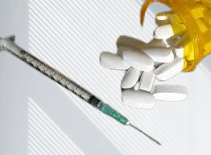

ILLICIT DRUGS
An illicit drug is one that is illegal to have(e.g methamphetamine,heroin),and the non-medical use
of drugs that are legally available such as pain killers and sleeping pills.
using illicit drugs can lead to health problems such as kidney problem etc



- Risk of overdose
1.chronic disease( heart and liver problems)
2.blood-borne viruses(infections e.g hepatitis and hiv)
3.lower levels of social and emotional wellbeing(mental health problems)
4.also increases suicide